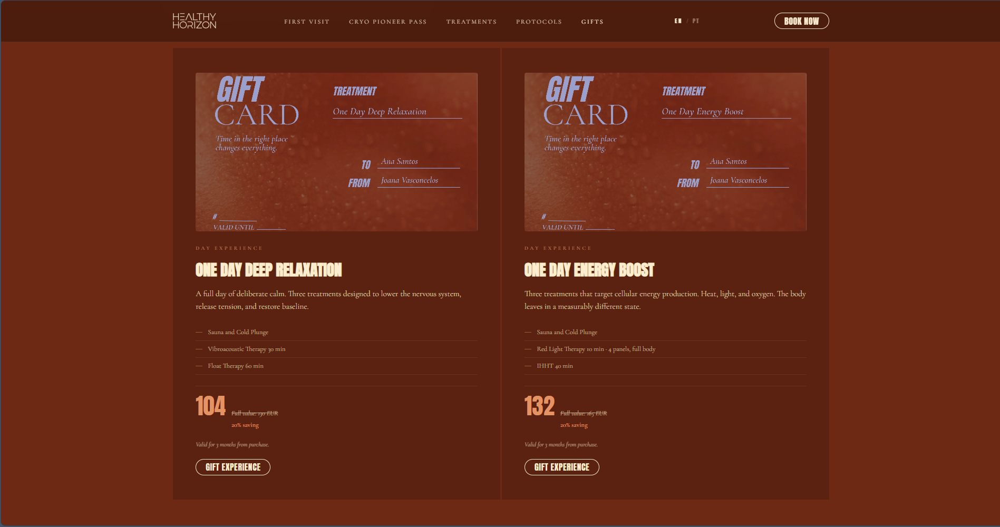
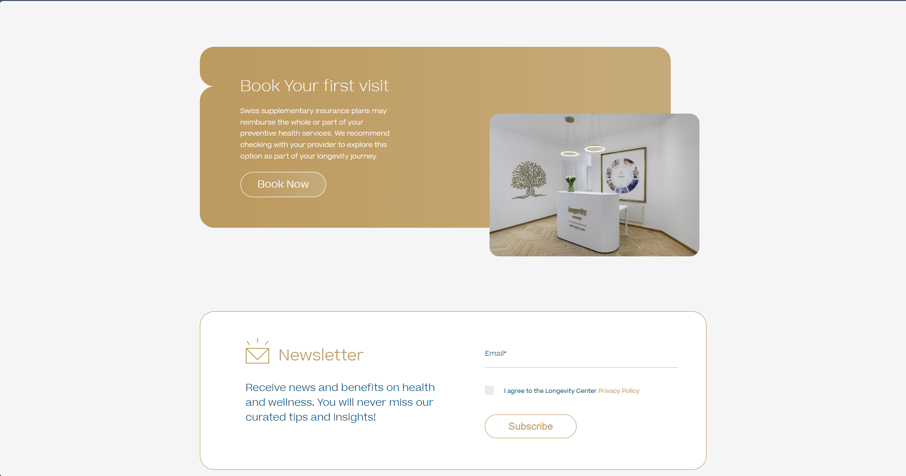
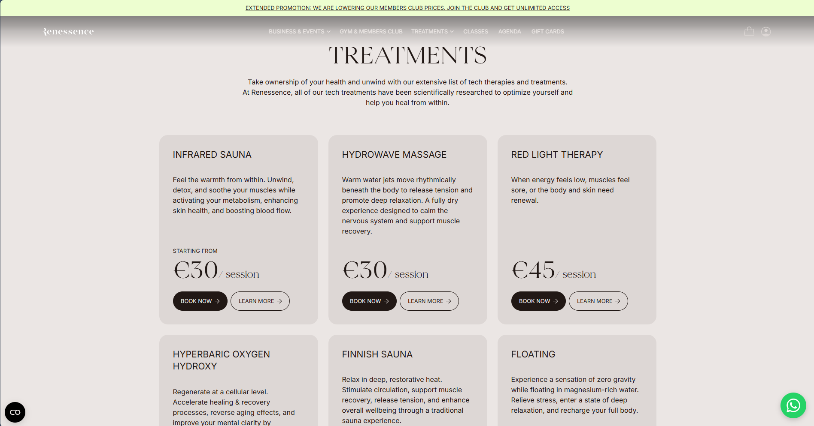
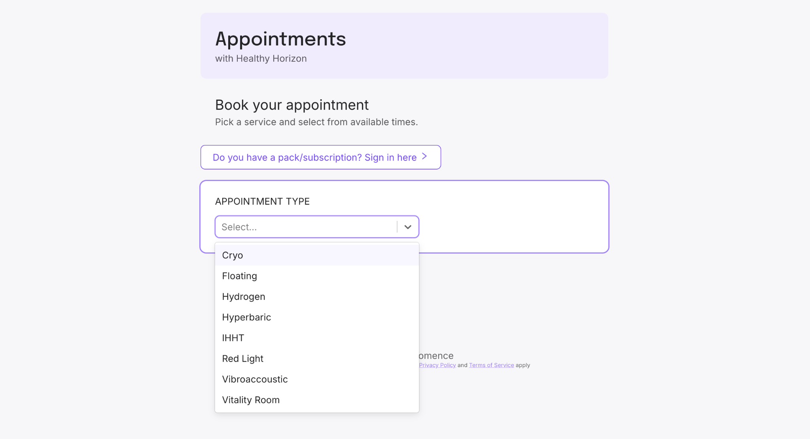
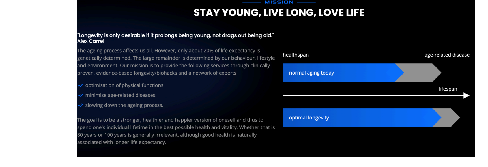

Что это. Структурированная доска референсов-ориентиров для позиционирования бренда REjuve. Рабочий мудборд, не финальное позиционирование.
Как читать блок:Образец формулировка конкурента дословно (EN/DE не переводим — это образец чужого копирайта) · Источник бренд и ссылка · Что берём зачем этот референс и что из него вытащить.
Граница честности. Цены и пакеты на чужих макетах — иллюстрация оформления с референсных сайтов, не наши цены.
Что берёмДля отстройки. В кастдеве и рисёрче уже были сигналы, что люди боятся впаривания — эта формулировка снимает напряжение. Если подтвердится потребность в приватности — добавить сюда же.
“Measurable outcomes, personal progression, and a follow-up relationship that continues between visits.”
“Здоровое старение, профилактика клеточного старения и окислительного стресса”
“Not only longer, but better”
ИсточникLongevity HBO Circle (WOO) · Horizon
Что берёмРамка «здоровое старение, профилактика клеточного старения и окислительного стресса».
2. Позиционирование
Экспертные модели позиционирования студий. Город небольшой — Кристине нужно занять конкретную нишу в головах людей. Через репутацию собственника: построить личный бренд эксперта и владелицы студии с чётким нарративом и миссией. Нужно проработать нарратив.
“Functional Medicine Expert. Leading the Future of Personalised Healthcare.”
Что берёмЭкспертность подтверждается через глубину протокола — количество биомаркеров, список модальностей.
“121.000 is the first group in Europe to combine scientifically backed preventive and curative approaches at the same location.”
“over 500 biomarkers such as blood, genetic and epigenetic markers, telomere lengths, body composition, and assessments of current biological age and pace of aging”
IDEA — 2 трека: боль и долголетие. «To improve both your current, and future health.» Разделить программы на решение боли (видимый результат) и долгосрочные результаты (вложение в будущее благополучие — не стесняться модных слов про митохондрии). Основная рамка: оставаться здоровым и решать конкретные краткосрочные запросы.
5. Первый визит
Предложения для первого визита — он же «шот» для быстрого эффекта (например, с дороги, джетлаг и прочее).
One day — Deep Relaxation (Sauna · Cold Plunge · Vibroacoustic · Float) — 104€
One day — Energy Boost (Sauna · Cold Plunge · Red Light · Hydrogen · IHHT) — 132€
One day — System Reset (Sauna · Cold Plunge · Hydrogen · Hyperbaric Oxygen) — 152€
Цены чужого сайта, иллюстрация формата.
6. Gift cards
Делать персональные и корпоративные. Бонусный подарочный сертификат тем, кто покупает годовой мембершип — клиент подарит и ненавязчиво прорекламирует близким.
“A Gift for Someone You Care About. Each experience is designed around a specific health outcome. The perfect present for a boyfriend, girlfriend, partner, father, mother, or close friend. Purchase online, include a personal message, and the recipient books at a time that works for them.”
Что берёмПодарок вокруг конкретного health-ауткама, покупка онлайн с личным сообщением, получатель сам выбирает время.

Healthy Horizon — gift cards
7. Конкуренты в Цуге
biohacking-studio.ch — конкурент в нише биохакинга из Цуга с медицинским подходом.
“Wir haben uns der Praxis des Biohackings verschrieben, einem zukunftsorientierten Ansatz, der darauf abzielt, die biologischen Funktionen des Körpers zu optimieren und zu verbessern.”
Что берёмСнова сигнал о ненавязчивости — похоже, для Цуга это важно. Встроить в коммуникацию + приватность.
Residential programmes 3–21 дней как premium entry
Intensive 3–5 дней diagnostic immersion для высокоценных клиентов
Концепция
«Everything begins with measurement.»
«Ваше здоровье начинается с данных» — первый визит = диагностика
9. Страховка и практика
Швейцарская дополнительная страховка может покрыть часть превентивных услуг — стоит проверить у провайдера и оформить как часть longevity-пути.

longevitycenter.ch — «Book Your First Visit» (+ швейцарская страховка) · первоисточник
10. Партнёрства и коллаборации
(раздел «Для Кристины»)
Расширение аудитории за счёт партнёрства с брендами препаратов, докторами. Искать амбассадора (потенциального клиента студии с медийностью) для коллабораций и продвижения в Instagram.
Тип
Референс
Что делает REjuve
Партнёрства
Augustinus Bader, Moleqlar, AURUM — halo-эффект от известных брендов
найти 2–3 Swiss/DE premium wellness-бренда для co-branding
Ambassador
Nina Ruge (медиа, 70 лет, living proof) — aspirational, не medical
найти Zug/Swiss публичную фигуру (бизнес/культура)
Medical
Partner physician отдельно (Dr. Auer) — compliance-safe
аналогичная модель для CH
11. Treatments
Интересно разделили тех-тритмент и классический (массаж и прочее).
“Take ownership of your health and unwind with our extensive list of tech therapies and treatments. At Renessence, all of our tech treatments have been scientifically researched to optimize yourself and help you heal from within.”
ИсточникRenessence
Что берёмХороший паттерн «book now / learn more» и дальше хороший анфолд (раскрытие). Цены процедур на референсе — чужого сайта.

Renessence — карточки treatments (book now / learn more)
12. Бронирование
У мембершип отдельный вход и коммуникация. Удобный выпадающий список процедур. Хорошая логика кнопок «book now / learn more» и дальнейшее раскрытие информации.

Healthy Horizon — запись (выпадающий список процедур) · первоисточник
13. Идеи и хуки
Named Protocols как единый язык бренда. «RE:» в названиях для программ первого визита или подарков: RE: COVER, RE: START.
Educational hook. «About 30–40% of chronic diseases are genetically determined. Up to 70% are influenced by our lifestyle.» — mitosphere.de
Визуализации. Хорошо сделанные графики нужны для сайта и коммуникации.

Визуализация healthspan / lifespan — «Stay young, live long, love life»